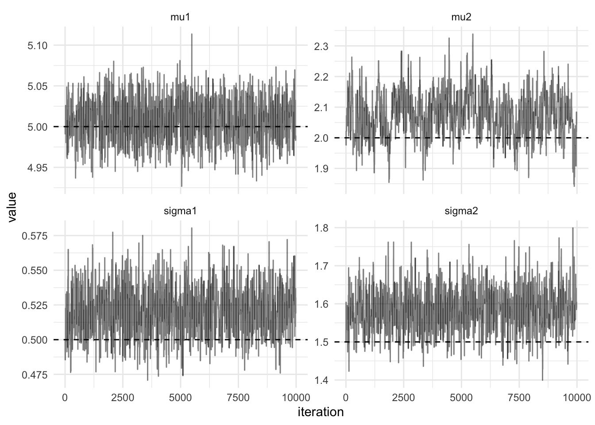

bivariate_normal <- function(theta, n) {
mu1 <- theta[1]
sigma1 <- theta[2]
mu2 <- theta[3]
sigma2 <- theta[4]
x <- rnorm(n / 2, mean = mu1, sd = sigma1)
y <- rnorm(n / 2, mean = mu2, sd = sigma2)
tibble(x, y)
}
theta <- c(5.0, 0.5, 2.0, 1.5)
sims <- bivariate_normal(theta, 1000)
xs <- as.matrix(sims)
ggplot(sims, aes(x, y)) +
geom_point()Bivariate Normal Model
This post considers how to implement a simple Metropolis scheme to determine the parameter posterior distribution of a bivariate Normal distribution. The implementation is generic, using higher-order-functions and hence can be re-used with new algorithms by specifying the un-normalised log-posterior density and a proposal distribution for the parameters. The built-in parallel package is used fit multiple chains in parallel, finally the Metropolis algorithm is reimplemented in C++ using Rcpp which seemlessly integrates with R.
The random variables in the model can be written as:
\[p(y,\mu, \Sigma) = p(\mu)p(\Sigma)\prod_{i=1}^N\mathcal{N}(y_i;\mu, \Sigma)\]
The covariance matrix is diagonal, hence the log-likelihood can be written as the sum of two univariate normal distributions:
\[\log p(y|\mu, \Sigma) = \sum_{j=1}^2\left(-\frac{N}{2}\log(2\pi\sigma_j^2) - \frac{1}{2\sigma_j^2}\sum_{i=1}^N(y_{ij}-\mu_j)^2\right)\]
log_likelihood <- function(xs, theta) {
apply(xs, 1, function(x) dnorm(x[1], mean = theta[1], sd = theta[2], log = T) +
dnorm(x[2], mean = theta[3], sd = theta[4], log = T)) %>% sum()
}The prior distributions are chosen to be:
\[\begin{align} p(\mu_j) &= \mathcal{N}(0, 3), \\ p(\Sigma_{jj}) &= \textrm{Gamma}(3, 3), \quad j = 1, 2. \end{align}\]
log_prior <- function(theta) {
dnorm(theta[1], log = T) +
dnorm(theta[3], log = T) +
dgamma(theta[2], shape = 3.0, rate = 3.0, log = T) +
dgamma(theta[4], shape = 3.0, rate = 3.0, log = T)
}
log_posterior <- function(xs)
function(theta)
log_likelihood(xs, theta) + log_prior(theta)Metropolis-Hastings algorithm
A Metropolis-Hastings algorithm can be used to determine the posterior distribution of the parameters, \(theta = \{\mu, \Sigma\}\). The Metropolis algorithm constructs a Markov chain whose stationary distribution corresponds to the target posterior distribution, \(p(\theta|y)\). In order to construct the Markov chain with this property, a carefully chosen tansition function \(P(\theta^\prime|\theta)\) is used. In order to prove the Metropolis algorithm has the target distribution as its stationary distribution, the existence and uniqueness of the stationary distribution must be determined. A transition function which satisfies detailed balance is chosen which is a sufficient condition for the existence of the stationary distribution:
\[P(\theta^\prime|\theta)p(\theta|y) = P(\theta|\theta^\prime)p(\theta^\prime|y)\]
The Markov chain proceeds by proposing a new value of the parameters, \(\theta^\prime\) from a distribution which can be easily simulated from (typically a Normal distribution centred at the previously accepted value of the parameter, \(\theta\)), \(q(\theta^\prime|\theta)\). The transition function is the product of the proposal distribution and the acceptance ratio. The acceptance ration which satisfies detailed balance is called the Metropolis choice:
\[A = \operatorname{min}\left(1, \frac{p(\theta^\prime|y)q(\theta|\theta^\prime)}{p(\theta|y)q(\theta^\prime|\theta)}\right).\]
R Implementation
First of a single step of the Metropolis algorithm is implementated. This is a higher order function, since two of the arguments are functions themselves. The function log_posterior is a function from parameters to log-likelihood and the proposal is a symmetric proposal distribution for the parameters, a function from parameters to parameters. The final argument, theta represents the parameters.
metropolis_step <- function(theta, log_posterior, proposal) {
propTheta <- proposal(theta)
a <- log_posterior(propTheta) - log_posterior(theta)
u <- runif(1)
if (log(u) < a) {
propTheta
} else {
theta
}
}Next the step function can be used in a for loop to generate m samples, each dependent on the previous step. An matrix containing \(m\) rows is initialised to contain each iteration of the Metropolis algorithm.
metropolis <- function(theta, log_posterior, proposal, m) {
out = matrix(NA_real_, nrow = m, ncol = length(theta))
out[1, ] = theta
for (i in 2:m) {
out[i, ] <- metropolis_step(out[i-1, ], log_posterior, proposal)
}
out
}The strictly positive variance parameters are proposed on the log-scale:
proposal <- function(x) {
z = rnorm(4, sd = 0.05)
c(x[1] + z[1], x[2] * exp(z[2]),
x[3] + z[3], x[4] * exp(z[4]))
}Finally, all the components are there to sample from the posterior distribution of the parameters. The mean of the sampled posterior distribution should coincide with the parameters used to simulate the data. In the figure below the actual values used to simulate the data are plotted with dashed lines.
out = metropolis(theta, log_posterior(xs), proposal, 10000)Parallel Chains in R
Typically, multiple chains are run in parallel, a straightforward way to do this in R is to use a parallel map from the furrr package. First we create a new function which alters the metropolis function to return a dataframe:
metropolis_df <- function(theta, log_posterior, proposal, m, parameter_names) {
function(x) {
mat <- metropolis(theta, log_posterior, proposal, m)
colnames(mat) <- parameter_names
as.data.frame(mat)
}
}Then future_map_dfr is used which performs the function .f for each element of .x. It then rowbinds into a dataframe. This is explicit in the function name, the suffix _dfr meaning a dataframe is the return type and is created by rowbinding the results. The id of each function run is provided by the .id column and takes on the values of .x.
plan(multiprocess)
mh_samples <- future_map_dfr(
.x = 1:2,
.f = metropolis_df(theta, log_posterior(xs), proposal, 10000, actual_values$parameter),
.id = "chain"
)The figure below shows the trace plots and marginal densities from 10,000 draws of the parallel Metropolis hastings algorithm.
Rcpp implementation
R has a straightforward interface to C++, the Metropolis-Hastings algorithm can be re-implemented using C++. C++ is a statically typed imperative language, hopefully the effort of reimplementing in C++ will result in a significant speed-up. The log_posterior and proposal functions are run many times to calculate the Markov chain. Let’s first implement these two functions using C++:
#include <Rcpp.h>
using namespace Rcpp;
// [[Rcpp::plugins(cpp11)]]
// [[Rcpp::export]]
double logDensity(NumericMatrix ys, NumericVector p) {
double ll = 0;
int n = ys.nrow();
for (int i = 0; i < n; i++) {
ll += R::dnorm(ys(i, 0), p(0), p(1), true) + R::dnorm(ys(i, 1), p(2), p(3), true);
}
return ll;
}
// [[Rcpp::export]]
NumericVector proposalCpp(NumericVector p, double delta) {
int d = p.size();
NumericVector z(d);
NumericVector propP(d);
for (int i = 0; i < d; i++) {
propP(i) = p(i);
z(i) = R::rnorm(0, delta);
}
propP(0) += z(0);
propP(1) *= exp(z(1));
propP(2) += z(2);
propP(3) *= exp(z(3));
return propP;
}These functions can then be used in the Metropolis algorithm written using R, as we can see from the below code chunk the C++ function appears as if it was an R function.
out_cpp <- metropolis(theta, function(p) logDensity(xs, p), function(p) proposalCpp(p, 0.05), 10000)
Performance Improvements
But what about the performance, the relative speedup can be calculated using the bench package. The plot below shows the absolute timings of the R implementation and the Rcpp implementation.
timings <-
bench::mark(
R = metropolis(theta, log_posterior(xs), proposal, 100),
Rcpp = metropolis(theta, function(p)
logDensity(xs, p),
function(p)
proposalCpp(p, 0.05), 100),
iterations = 500,
check = FALSE
)Citation
BibTeX citation:
@online{law2019,
author = {Jonny Law},
title = {Efficient {Markov} Chain {Monte} {Carlo} in {R} with {Rcpp}},
date = {2019-02-11},
langid = {en}
}
For attribution, please cite this work as:
Jonny Law. 2019. “Efficient Markov Chain Monte Carlo in R with
Rcpp.” February 11, 2019.